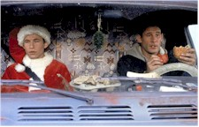

Contents | Features | Reviews | News | Archives | Store |
 |
|
| Movie Credits | Buy It! |
I'll Be Home For Christmas
Review by Elias Savada
Posted 13 November 1998
| Directed by Arlene Sanford. Starring
Jonathan Taylor Thomas, Jessica Biel, Written by Harris Goldberg and Tom Nursall, |
Family fare. Pure, sweet, and PG-rated. It’s sugar-coated household comedy wrapped in a simple holiday gift wrap and starring Home Improvement’s Jonathan Taylor Thomas. According to press material Mr. Thomas maintains a straight "A" average in school. No such luck here, but it’s a bearable B– effort. Disney’s pre-Thanksgiving holiday, live-action greeting-card is an obvious variation of Planes, Trains, and Automobiles. The less likely title -- in the style of the old Bob Hope-Bing Crosby features -- would have been The Road to Larchmont, that upper-class, Westchester County, New York, community that is the ultimate destination of our self-centered, entrepreneurial hero, college freshman Jake Wilkinson. And at a brisk 80-minute or so length (including a extreme sport Goofy cartoon at the film’s head), at least you won’t stumble out bleary-eyed as if you just had a three-hour date with death. The closest Joe Black gets here is the fact that Jake is upset with dad (Gary Cole, in a role about as short as his other Christmas release, A Simple Plan) for re-marrying to a sweetheart of a step mom (Eve Gordon) less than a year after the family matriarch died. The undergrad would rather vacation in a three-bedroom condo in Cabo San Lucas than hit the ole homestead and tangle with his parents and disgruntled younger sister Tracey. Until dad dangles a big carrot before the car-conscious kid…a red-hot 1957 Porsche, but only if sonny boy makes it home in time for Christmas dinner.
Director Arlene Sanford (A Very Brady Sequel) starts the film with a breezy bouncing Santa hat title sequence and settles down for the cross-country trek, although the filmmakers cheat a little to save on production costs, subbing Californian and Canadian (mostly Vancouver) locations for the real American thing, and as I grew up not to far from Jake’s suburban New York objective, I felt gypped at not spotting some of the local relics of my past. It would seem that one of the scriptwriters (Harris Goldberg and Tom Nursall; their first produced feature, from a story by Michael Allin, who lives on Long Island) grew up nearby as well.
Mr. Thomas doesn’t over-extend his acting abilities (not that the screenplay paints any characters too deeply) as a college student at Palisades College in Los Angeles. His on-again, off-again girlfriend, Allie (model/actress Jessica Biel) hopes to hitch a ride back East with Jake over winter break as she also hails from the same home town, but the lad ends up abandoned in the middle of the desert in a Santa suit, beard and hat super-glued to his head, and not a penny or phone card to his name. His scheme to help several prominent jocks pass a history final now has gone awry at the hands of neanderthal Eddie (Adam LaVorgna), a snide, not-too-smart, fellow student with the hots for Allie and her Ally McBeal short skirts (perhaps an in-joke as director Sanford has helmed episodes of that Fox TV series), so he enlists the crashed test dummies and plops poor Jake out in the middle of nowhere, thereby positioning himself as Allie’s knight in shining armor. The desperate woman, in search of a last minute ride home, reluctantly accepts Eddie’s realizing the boy’s deep deficiencies in gray matter, and setting strict ground rules for the testosterone-hyped youngster.
The charm of the film are the various characters the Santa-clad Jake meets, his wily road-warrior efforts, and the Rube Goldberg atmosphere as one circumstance leads to another. After a lift from a carload of aging Tom Jones queens and leaving them with some barf in the back seat, Jake nearly gets run down by Nolan Briggs (the skating messenger in Caroline in the City), a hamburger helpless fence who catches a dose of the Christmas spirit and helps dole out toasters and hand-held vacuum cleaners at a children’s hospital. An over-friendly cop (Sean O’Bryan) attaches himself to Jake, who helps the policeman with marital problems. An unlikely teaming of the arch rivals chomping on twinkies is short-lived, and, as luck would have it (and it does a LOT in this film), the penniless Santa ends up dashing through the streets of Madison, Wisconsin, in a 5K run expressly for hundreds of red-trimmed St. Nicholas’s. And so on. All ends well, as expected, in a one-horse open sleigh. ‘Tis the season.
The problems with the film, and you can easily forgive them if you must, lie mostly in the under-developed script with its cartoon-deep characters, but hey, it is a Disney film. Never explained is why Eddie is always behind the wheel and Allie just his passenger. And considering all the roads that lead from California to New York, it’s too coincidental that Jake keeps running into Allie and Eddie along the way. It’s to Sanford’s advantage that she generally lifts this semi-pleasant film above its lesser origins.
Contents | Features | Reviews | News | Archives | Store
Copyright © 1999 by Nitrate Productions, Inc. All Rights Reserved.